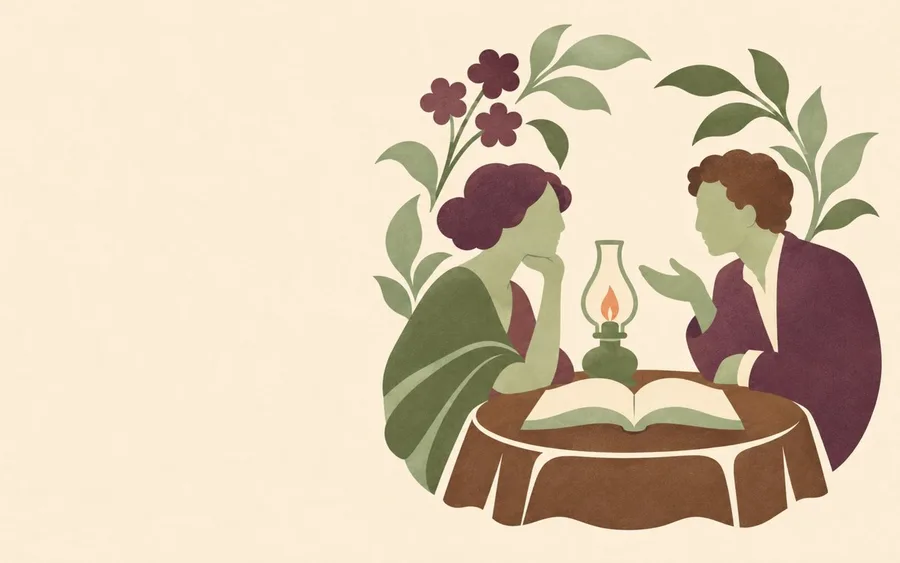
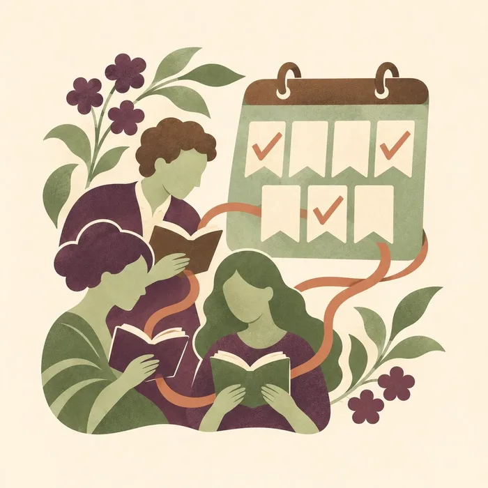
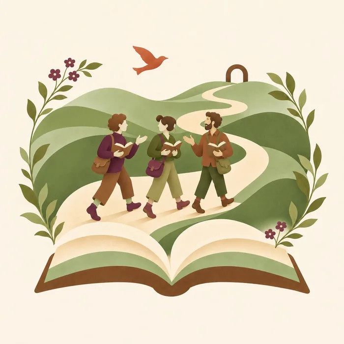
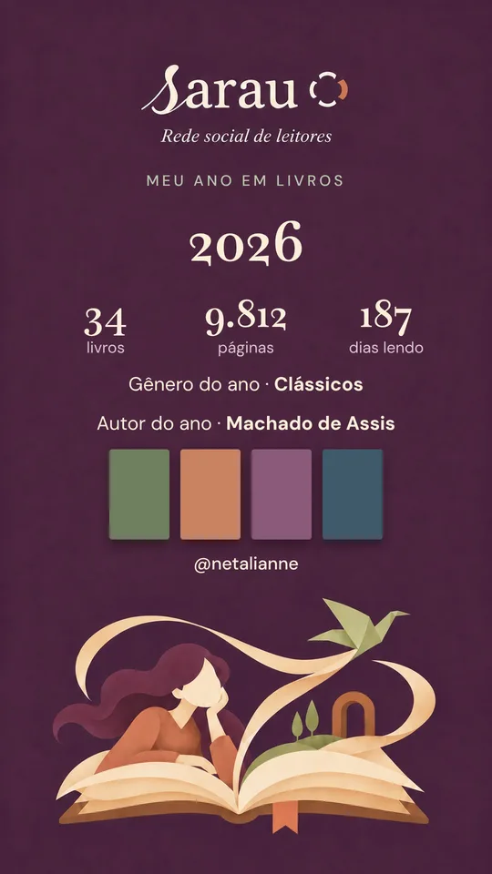
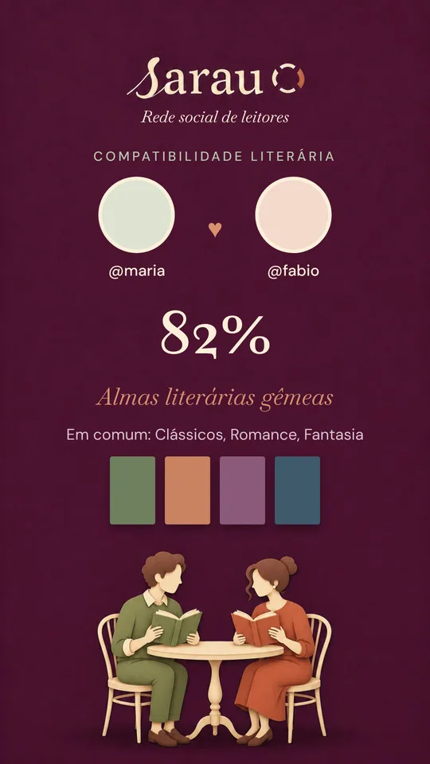

Sua estante
Lendo, lidos, quero ler e os que você tem em casa. Leia o código de barras, traga a estante de outros apps ou fotografe a prateleira.
Rede social de leitores
Sua estante, seus clubes do livro e leitores que gostam do que você gosta, num só lugar.
Grátis. Sem anúncios.
O que tem no Sarau
Feito por quem organiza clube do livro e não queria mais ter cinco apps abertos para isso.
Lendo, lidos, quero ler e os que você tem em casa. Leia o código de barras, traga a estante de outros apps ou fotografe a prateleira.
Cronograma por capítulos, encontros com lembrete, conversa por etapa sem spoiler e a Roda de conversa do grupo.
Check-in de leitura com amigos, com ranking, e jornadas como "12 livros no ano" que deixam um selo no seu perfil.
Notas com meia estrela, resenhas com aviso de spoiler e prosas curtas para comentar o que está lendo.
Páginas por mês, gêneros e autores do ano, meta de leitura e a sua retrospectiva no fim do ano.
Compatibilidade literária com quem você segue e indicações de quem lê parecido com você.
Para quem organiza clube do livro
Escolha o livro, marque os encontros e o Sarau divide a leitura em etapas. Cada pessoa marca até onde leu, e o resto fica escondido para ninguém levar spoiler.

Perfil literário
Responda 15 perguntas curtas e descubra o seu perfil entre doze, como Humanista, Cartógrafo ou Gótico. Ele mostra seu jeito de ler, indica livros e ajuda a achar quem lê parecido com você.
Desafios

Crie um desafio, chame quem quiser pelo código e registre a leitura do dia. O ranking mostra quem está firme.

Metas maiores, como uma lista de clássicos ou 30 dias de leitura. Quem completa ganha um selo no perfil.
Compartilhe
Terminou um livro, bateu a meta ou fechou o ano? O Sarau monta a imagem pronta para o Instagram e o status do WhatsApp.


Perguntas
Sim. Dá para usar tudo sem pagar e sem anúncios.
A versão para Android já está no Google Play. A do iPhone está a caminho da App Store.
Consegue. Dá para importar um arquivo .csv, ler o código de barras dos seus livros ou fotografar a prateleira para o app reconhecer os títulos.
Você escolhe. O perfil pode ser só para quem você aprovar, e dá para esconder livros específicos. Sua meta e suas estatísticas são só suas.
Pode. Crie o clube, convide o grupo pelo código e use o cronograma, os encontros e a Roda de conversa no lugar de vários apps.
Baixe o Sarau, monte a sua estante e encontre a sua roda de leitura.